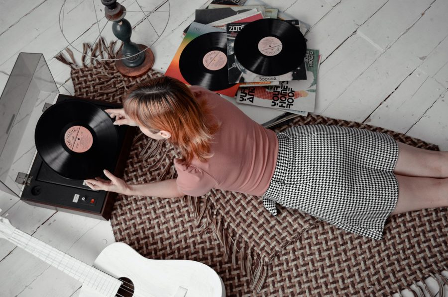

Discover Classic Objects
Vintage objects remind us of earlier times. They can show how technology, music, home decoration and everyday life have changed over the years.
Popular Vintage Collectables
| Item | What Makes It Special? | Where It Can Be Used |
|---|---|---|
| Film camera | Classic design and traditional photography | Photography and collecting |
| Vinyl record | Physical music format and album artwork | Listening to music |
| Vintage watch | Traditional craftsmanship and style | Fashion and collecting |
| Wooden furniture | Distinctive designs and materials | Home decoration |


Words Collectors Use
- Vintage
- Usually an item from a past era that is at least about 20 years old.
- Antique
- A much older item, often counted as 100 years old or more.
- Retro
- A new item made in the style of an earlier time.
Things Collectors Often Appreciate
- Unique designs and craftsmanship
- The history behind an object
- Reusing and caring for older items
Looking After Vintage Items
Keep collectables clean and dry, protect them from direct sunlight when appropriate, and follow care instructions for delicate materials.
Learn more about the history of vinyl records (Wikipedia).
Old treasures, new memories.